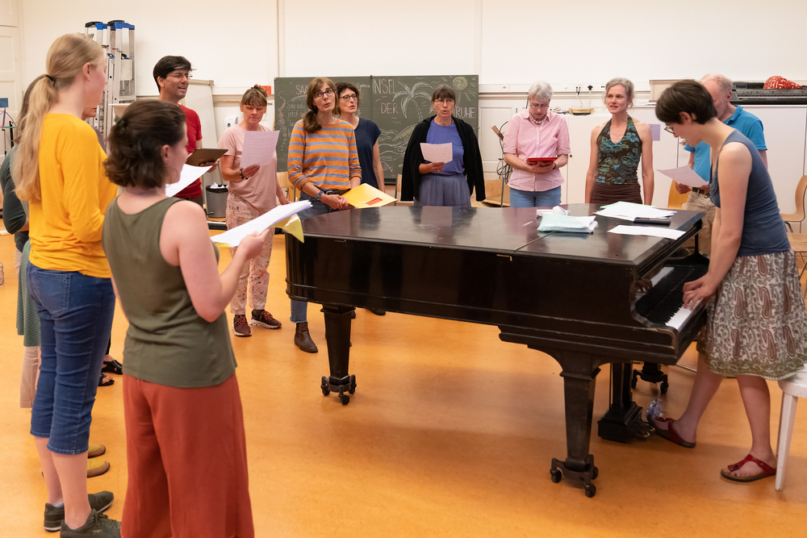
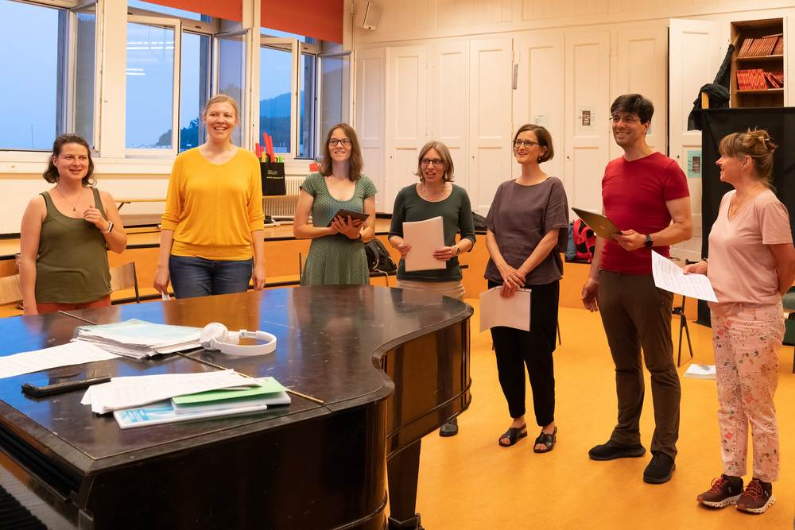
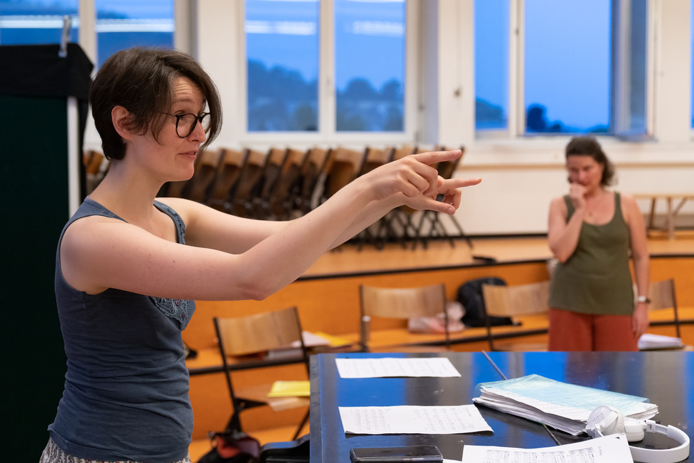
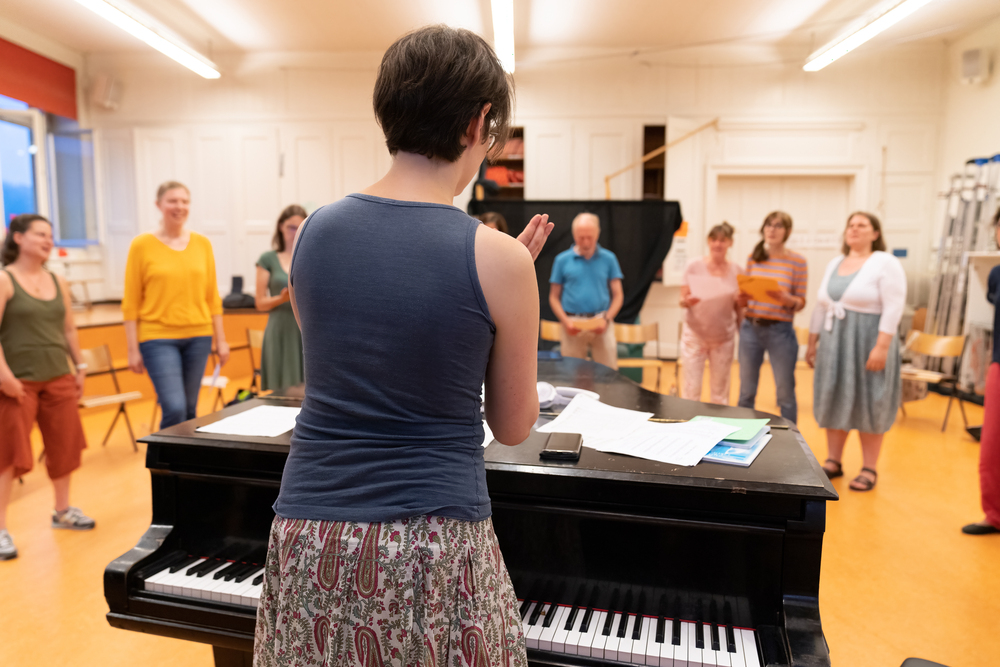

- 
- 
-

- 
- 
Eine bunt gemischte Gruppe unterschiedlichen Alters, verschiedener Nationen und Stimmen. Was uns verbindet: die Freude am gemeinsamen Singen - just for joy!
Jeden Donnerstag von 18:45 bis 20:15 Uhr unter fachkundiger Leitung im Singsaal des Bifangschulhauses (oberster Stock). Im Sommer bei schönem Wetter proben wir im Kantiwald (Feuerstelle Finnenbahn oder Känzeli).
Während den Schulferien der Stadt Olten finden keine Proben statt.
Probenplan:
An Fronleichnam treffen wir uns zur Vereins-GV: mit ein paar Liedern, am Grill und mit einem reichhaltigen Buffet. In den Schulferien gibt es ab und zu Homecinema bei Tobi und in den Herbstferien findet das Wild-Essen in einem Restaurant in der Umgebung statt.
Die anfallenden Kosten (Lohn Chorleitung, Raummiete, usw.) teilen wir unter uns auf. Der Beitrag beläuft sich auf ca. 180 CHF pro Semester.
Unser Repertoire geht querbeet durch alle Sparten: von Mozart bis Sting, vom 15. bis ins 21. Jahrhundert, von Japan via Guggisberg bis zu den Ureinwohnern Amerikas.
Konzerte gibts bei MultipleVoice eigentlich nicht. Aber eben: „eigentlich nicht"! Mit ein paar Liedern begleiteten wir schon einige Hochzeitsfeiern unserer Mitsängerinnen und Mitsänger.
MultipleVoice Olten und Music Makers Zürich in Concert: Am 22.11.2025 16:30 in der Friedenskirche Olten und am 23.11.2025 18:30 in der Kirche Enge in Zürich